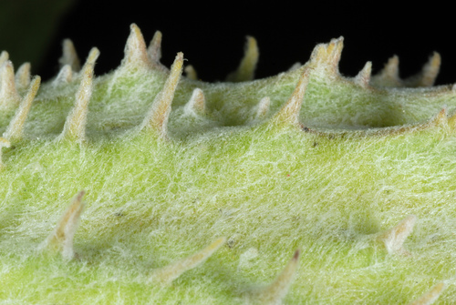

Papilio eurymedon butterfly / moth
Western, reaching the Alberta foothills.
8 documented plant relationships.


 J Brew, some rights reserved (CC BY-SA), uploaded by J Brew")
 Douglas Goldman, some rights reserved (CC BY-SA), uploaded by Douglas Goldman")
 Douglas Goldman, some rights reserved (CC BY-SA), uploaded by Douglas Goldman")
 Alan Rockefeller, some rights reserved (CC BY), uploaded by Alan Rockefeller")
 gwt2102, some rights reserved (CC BY)")
 Pohled 111, some rights reserved (CC BY-SA)")